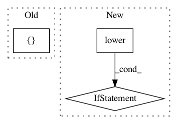

4b04abfd92fea108159e9b38da61c34d11504c71,setup.py,,define_extensions,#,11
Before Change
compile_args.append("-march=native")
return [Extension("lightfm._lightfm_fast",
["lightfm/_lightfm_fast%s" % file_ext],
extra_link_args=["-fopenmp"],
extra_compile_args=compile_args)]
After Change
if "anaconda" not in sys.version.lower():
compile_args.append("-march=native")
if "darwin" in sys.platform.lower() or True:
print("Compiling on OSX: installing without OpenMP support.")
return [Extension("lightfm._lightfm_fast_no_openmp",
["lightfm/_lightfm_fast_no_openmp.c"],
extra_compile_args=compile_args)]
else:
return [Extension("lightfm._lightfm_fast_openmp",
["lightfm/_lightfm_fast_openmp.c"],
extra_link_args=["-fopenmp"],
extra_compile_args=compile_args + ["-fopenmp"])]
class Cythonize(Command):
Compile the extension .pyx files.
In pattern: SUPERPATTERN
Frequency: 3
Non-data size: 3
Instances
Project Name: lyst/lightfm
Commit Name: 4b04abfd92fea108159e9b38da61c34d11504c71
Time: 2016-04-24
Author: maciejkula@gmail.com
File Name: setup.py
Class Name:
Method Name: define_extensions
Project Name: GPflow/GPflow
Commit Name: 9cdb2a20cb725f21589beda5fd45b1893b262fe4
Time: 2019-11-21
Author: joehall87@gmail.com
File Name: gpflow/utilities/bijectors.py
Class Name:
Method Name: positive
Project Name: lingpy/lingpy
Commit Name: 4560e7769fc21e04c5f673f0549de6601d43de45
Time: 2013-09-09
Author: mattis.list@posteo.de
File Name: setup.py
Class Name:
Method Name: